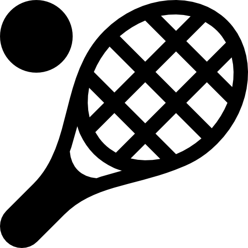

6-3 4-6 6-3 6-4
La raqueta con la que Rafa Nadal ganó el punto en la final de Roland Garros de 2007 ante Roger Federer se vendió por más de 118.000 dólares en una subasta que se celebró el lunes. Así, esta raqueta se ubica entre los objetos de recuerdo de mayor precio dentro del tenis.
Esta raqueta, que estuvo en el Museo australiano del tenis antes de su reciente cierre, se vendió por 118.206 dólares en una subasta por internet llevada a cabo por Prestige Memorabilia / The Tennis Auction. Nadal también la utilizó en semifinales de aquel torneo, en el que venció a Novak Djokovic.
Con este precio, se ha convertido en uno de los objetos de mayor precio en el tenis. Las subastas individuales de raquetas más altas hasta el momento incluyen otra de Nadal en el Abierto de Australia de 2022, que se vendió por 139.700 dólares; la raqueta de Billie Jean King en la 'Batalla de los Sexos', que fue adquirida por 125.000 dólares; y la raqueta de Djokovic en Roland Garros de 2016, vendida por 107.482 dólares.
